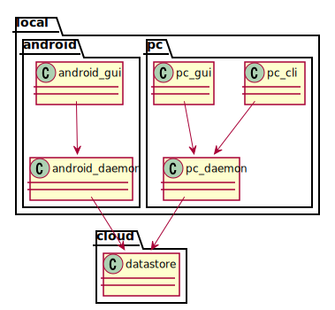

design overview
functions of hashira on PC
cli and gui
- add a new task and place it on Backlog
- change status of tasks to ToDo, Doing, and Done
- add interrupter task, place it on Doing directory
- show list of tasks on each status
gui specific
- show chart to indicate how long time spent to current task
functions of hashira on Android
application
- add a new task and place it on Backlog
- change status of tasks to ToDo, Doing, and Done
- add interrupter task, place it on Doing directory
- show list of tasks on each status
widget
- add a new task and place it on Backlog
- show list of tasks on Backlog
- show current task and how long time spent to the task
functions of daemon
- it is for making hashira work even there's no network
- daemon has database to cache the tasks and "commands"
- "commands" means a unit of modifications to tasks. e.g) add new task, move task to ToDo, and so on
- "commands" are used to sync with datastore
- if network is available, then sync registered or changed tasks with cloud
functions of datastore
- it is assumed to place on cloud. it is for syncing data between devices
- it accepts "commands" to add or modify tasks
- daemon can retrieve chunk of commands with from-to query to reflect datastore's update to local database
modules
